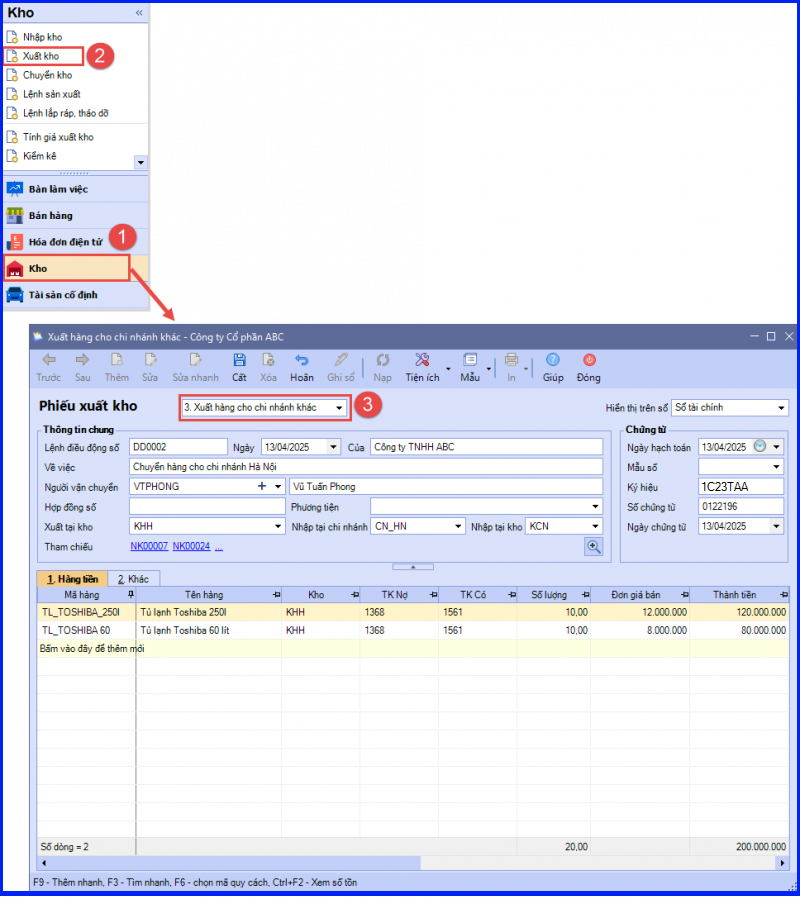
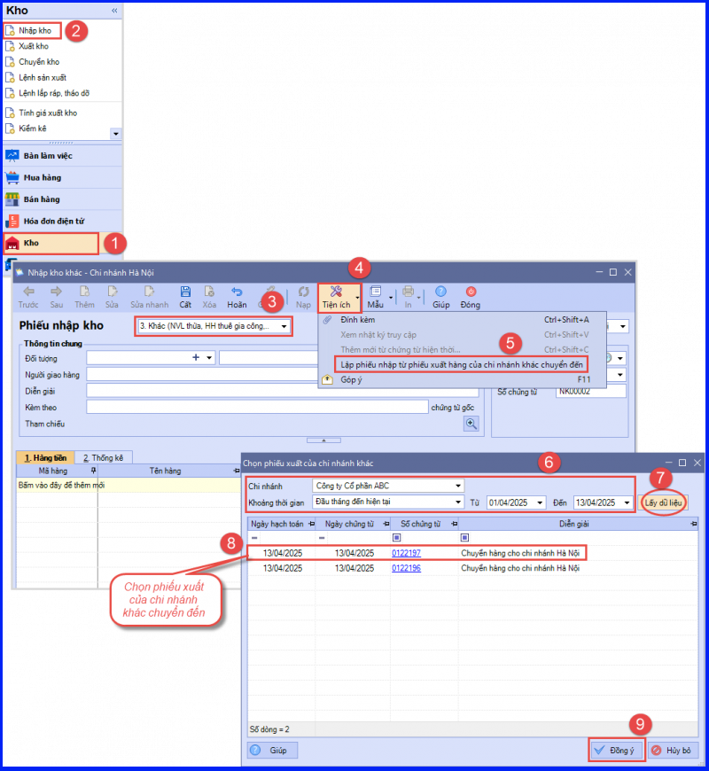
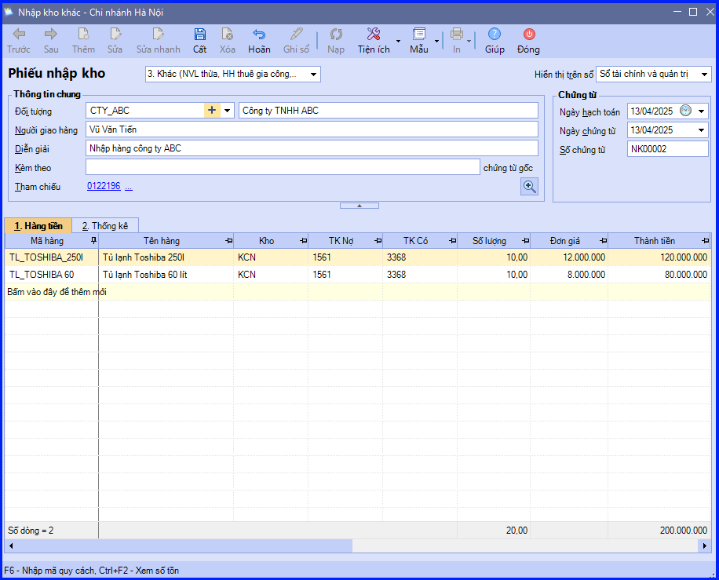

Hướng dẫn cách hạch toán ghi sổ nghiệp vụ xuất hàng cho các đơn vị (chi nhánh) hạch toán phụ thuộc trên phần mềm Misa
Khi có yêu cầu xuất hàng cho các đơn vị hạch toán phụ thuộc để bán, thông thường sẽ phát sinh các hoạt động sau:
- Căn cứ vào lệnh điều động nội bộ của công ty về việc chuyển hàng cho các đơn vị trực thuộc hoặc cửa hàng ở khác địa phương, bộ phận chịu trách nhiệm sẽ lập đề nghị xuất kho hàng hóa
- Kế toán kho lập Phiếu xuất kho, sau đó chuyển Kế toán trưởng và Giám đốc ký duyệt
- Căn cứ vào Phiếu xuất kho, Thủ kho xuất kho hàng hoá
- Thủ kho ghi sổ kho, còn kế toán ghi sổ kế toán kho.
- Bộ phận đề xuất nhận hàng, sau đó vận chuyển tới các đơn vị hạch toán phụ thuộc.
1. Cách định khoản hạch toán khi Xuất hàng cho các đơn vị (chi nhánh) hạch toán phụ thuộc
a - Trường hợp không ghi nhận doanh thu giữa các khâu trong nội bộ, kế toán lập Phiếu xuất kho kiêm vận chuyển nội bộ hoặc hóa đơn GTGT
- Nợ TK 136 - Phải thu nội bộ
- Có TK 155, 156
b - Trường hợp doanh nghiệp ghi nhận doanh thu bán hàng cho các đơn vị trong nội bộ doanh nghiệp
- Nợ TK 632 - Giá vốn hàng bán
- Có TK 155, 156
2. Các bước hạch toán, ghi sổ nghiệp vụ xuất hàng cho các đơn vị (chi nhánh) hạch toán phụ thuộc trên phần mềm Misa
Tại chi nhánh chuyển hàng
- Lập phiếu xuất kho chuyển hàng cho chi nhánh khác:

CHÚ Ý:
- Với các phiếu xuất kho dành cho các đơn vị hạch toán phụ thuộc, thông tin về số phiếu xuất sẽ phải được quản lý giống như số hóa đơn.
- Vì thế, nếu doanh nghiệp không sử dụng phần mềm để in hóa đơn thì sẽ phải tự nhập tay thông tin: Số chứng từ, Ký hiệu, Mẫu số.
- Còn nếu doanh nghiệp sử dụng phần mềm để tự in hóa đơn thì sẽ sử dụng chức năng "Cấp số chứng từ trên thanh công cụ".
- Trường hợp Thủ kho có tham gia sử dụng phần mềm, sau khi phiếu xuất hàng cho chi nhánh khác được lập, chương trình sẽ tự động sinh phiếu xuất kho trên tab "Đề nghị nhập, xuất kho của Thủ kho". Thủ kho hiện việc ghi sổ phiếu xuất kho vào sổ kho.
Tại chi nhánh nhận hàng
- Chọn phiếu xuất kho của chi nhánh khác chuyển đến để lập phiếu nhập kho.

- Hệ thống sẽ tự động lấy thông tin hàng hóa từ phiếu xuất kho sang phiếu nhập kho.

CHÚ Ý:
- Sau khi nhập kho tại chi nhánh nhận hàng, nếu chi nhánh chuyển hàng cập nhật lại Đơn giá vốn (xuất kho) thì kế toán vẫn có thể cập nhật lại vào Đơn giá nhập kho đã lấy về trước đó.
- Thủ kho có thể thực hiện ghi sổ chứng từ nhập kho đối với các vật tư, hàng hóa được xuất từ các chi nhánh hạch toán phụ thuộc ngay tại màn hình danh sách Đề nghị nhập, xuất kho bằng cách chọn chứng từ trên danh sách, sau đó chọn chức năng "Ghi sổ" trên thanh công cụ.
- Trường hợp Thủ kho có tham gia sử dụng phần mềm, sau khi phiếu nhập kho hàng từ chi nhánh khác xuất đến được lập, chương trình sẽ tự động sinh phiếu nhập kho trên tab "Đề nghị nhập, xuất kho của Thủ kho". Thủ kho thực hiện việc ghi sổ phiếu nhập kho vào sổ kho.
- Cách xác định Đơn giá vốn của VTHH trên phiếu xuất kho.
KẾ TOÁN DIỆU TÂM chúc các bạn làm tốt!
=============================
Nếu bạn muốn thành thạo các kỹ năng làm kế toán trên phần mềm Misa
Thì bạn có thể tham khảo "Khóa Học Thực Hành Kế Toán Trên Phần Mềm Misa" tại Công ty đào tạo Kế Toán Diệu Tâm
Trong khóa học này, bạn sẽ được dạy cách lên sổ sách, lập báo cáo tài chính trên phần mềm Misa
Chi tiết về chương trình đào tạo bạn xem tại đây nhé: Khóa học thực hành kế toán trên Misa
=============================
=============================
Nếu bạn muốn thành thạo các kỹ năng làm kế toán trên phần mềm Misa
Thì bạn có thể tham khảo "Khóa Học Thực Hành Kế Toán Trên Phần Mềm Misa" tại Công ty đào tạo Kế Toán Diệu Tâm
Trong khóa học này, bạn sẽ được dạy cách lên sổ sách, lập báo cáo tài chính trên phần mềm Misa
Chi tiết về chương trình đào tạo bạn xem tại đây nhé: Khóa học thực hành kế toán trên Misa
=============================